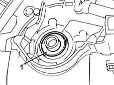
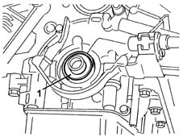
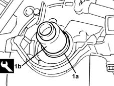
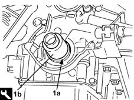

1020D18 front crank shaft cover oil seal - replace
- Path
- Procedures > 10 ENGINE > 1020 CRANKCASE SUMP AND COVERS > 1020D oil seals on crank shaft > 1020D18 front crank shaft cover oil seal - replace
- Kind
- repair procedure (removal / refitting; the operation number is the code)
- Applies to
- engines: 1.2 8v, 1.2 16v, 1.4 16v; all production periods
- Interactive page
- https://sloeber94.github.io/elrnDB-lYpsln/en/#/2428870
Applies to: engines: 1.2 8v; all production periods
 Removing
Removing
 Refitting
RefittingPosition the vehicle on the ramp.
Proceed with removal 4450B04 right front wheel r r .
Proceed with removal 7055B66 Engine compartment DUST SHIELD protection in right front wheel arch - R.R. .
Proceed with removal 7055B91 Right front WHEEL ARCH LINER - R.R. .
Proceed with removal 1008B10 power unit front mount (timing side) flexible block - replace .
Proceed with removal 1008A46 cam shaft left rigid mount - r r .
Proceed with removal 1032D12 timing system protective cover(s) - r + r .
Proceed with removal 1092B40 air conditioner compressor/alternator drive belt - r + r .
Proceed with removal 1092A10 Crankshaft services PULLEY - R.R. .
Proceed with removal 1032B10 toothed timing belt - r + r for timing adjustment or replacement .
Proceed with removal 1032B44 toothed drive pulley - r + r with timing belt removed .
1. Remove the crankshaft front cover oil seal.

Applies to: engines: 1.2 16v; all production periods
Removing
RefittingProceed with removal 4450B04 right front wheel r r .
Proceed with removal 7055B66 Engine compartment DUST SHIELD protection in right front wheel arch - R.R. .
Proceed with removal 7055B91 Right front WHEEL ARCH LINER - R.R. .
Proceed with removal 1092B40 air conditioner compressor/alternator drive belt - r + r .
Proceed with the removal.
Proceed with removal 1048A10 air cleaner filtering element - replace .
Proceed with removal 1056B60 single fuel manifold pipe, with injectors - r + r .
Proceed with removal 1032B10 toothed timing belt - r + r for timing adjustment or replacement .
Proceed with removal 1032B44 toothed drive pulley - r + r with timing belt removed .
1. Remove the crankshaft front cover oil seal.

Applies to: engines: 1.4 16v; all production periods
Removing
RefittingProceed with removal 4450B04 right front wheel r r .
Proceed with removal 7055B66 Engine compartment DUST SHIELD protection in right front wheel arch - R.R. .
Proceed with removal 7055B91 Right front WHEEL ARCH LINER - R.R. .
Proceed with removal 1092B40 air conditioner compressor/alternator drive belt - r + r .
Proceed with the removal.
Proceed with removal 1048A10 air cleaner filtering element - replace .
Proceed with removal 1056B60 single fuel manifold pipe, with injectors - r + r .
Proceed with removal 1032B10 toothed timing belt - r + r for timing adjustment or replacement .
Proceed with removal 1032B44 toothed drive pulley - r + r with timing belt removed .
1. Remove the crankshaft front cover oil seal.
Applies to: engines: 1.2 8v; all production periods
Refitting
Removing1. Fit a new crankshaft front oil seal (1a) using he tool (1b).
 | Name | Country |
|---|---|---|
1b | Fitting tool | 1.860.990.000 |

Applies to: engines: 1.2 16v; all production periods
Refitting
Removing1. Fit a new crankshaft front oil seal (1a) using he tool (1b).
| Name | Country |
|---|---|---|
1b | Fitting tool | 1.860.990.000 |

Applies to: engines: 1.4 16v; all production periods
Refitting
Removing1. Fit a new crankshaft front oil seal (1a) using he tool (1b).
| Name | Country |
|---|---|---|
1b | Fitting tool | 1.860.990.000 |
Applies to: engines: 1.2 8v; all production periods
Proceed with refitting 1032B44 toothed drive pulley - r + r with timing belt removed .
Proceed with refitting 1032B10 toothed timing belt - r + r for timing adjustment or replacement .
Proceed with refitting 1092A10 Crankshaft services PULLEY - R.R. .
Proceed with refitting 1092B40 air conditioner compressor/alternator drive belt - r + r .
Proceed with refitting 1032D12 timing system protective cover(s) - r + r .
Proceed with refitting 1008A46 cam shaft left rigid mount - r r .
Proceed with refitting 1008B10 power unit front mount (timing side) flexible block - replace .
Proceed with refitting 7055B91 Right front WHEEL ARCH LINER - R.R. .
Proceed with refitting 7055B66 Engine compartment DUST SHIELD protection in right front wheel arch - R.R. .
Proceed with refitting 4450B04 right front wheel r r .
Refill the engine oil lubrication system 0010T11 engine oil check level and top up .
Refill the engine cooling system with coolant 0010T20 coolant change .
Remove the car from the ramps.
Applies to: engines: 1.2 16v; all production periods
Proceed with refitting 1032B44 toothed drive pulley - r + r with timing belt removed .
Proceed with refitting 1032B10 toothed timing belt - r + r for timing adjustment or replacement .
Proceed with refitting 1056B60 single fuel manifold pipe, with injectors - r + r .
Proceed with refitting 1048A10 air cleaner filtering element - replace .
Proceed with the refitting.
Proceed with refitting 1092B40 air conditioner compressor/alternator drive belt - r + r .
Proceed with refitting 7055B91 Right front WHEEL ARCH LINER - R.R. .
Proceed with refitting 7055B66 Engine compartment DUST SHIELD protection in right front wheel arch - R.R. .
Proceed with refitting 4450B04 right front wheel r r .
Applies to: engines: 1.4 16v; all production periods
Proceed with refitting 1032B44 toothed drive pulley - r + r with timing belt removed .
Proceed with refitting 1032B10 toothed timing belt - r + r for timing adjustment or replacement .
Proceed with refitting 1056B60 single fuel manifold pipe, with injectors - r + r .
Proceed with refitting 1048A10 air cleaner filtering element - replace .
Proceed with the refitting.
Proceed with refitting 1092B40 air conditioner compressor/alternator drive belt - r + r .
Proceed with refitting 7055B91 Right front WHEEL ARCH LINER - R.R. .
Proceed with refitting 7055B66 Engine compartment DUST SHIELD protection in right front wheel arch - R.R. .
Proceed with refitting 4450B04 right front wheel r r .
Topics linked from this page (14)
- 0010T11 engine oil check level and top up
- 0010T20 coolant change
- 1008A46 cam shaft left rigid mount - r r
- 1008B10 power unit front mount (timing side) flexible block - replace
- 1032B10 toothed timing belt - r + r for timing adjustment or replacement
- 1032B44 toothed drive pulley - r + r with timing belt removed
- 1032D12 timing system protective cover(s) - r + r
- 1048A10 air cleaner filtering element - replace
- 1056B60 single fuel manifold pipe, with injectors - r + r
- 1092A10 Crankshaft services PULLEY - R.R.
- 1092B40 air conditioner compressor/alternator drive belt - r + r
- 4450B04 right front wheel r r
- 7055B66 Engine compartment DUST SHIELD protection in right front wheel arch - R.R.
- 7055B91 Right front WHEEL ARCH LINER - R.R.